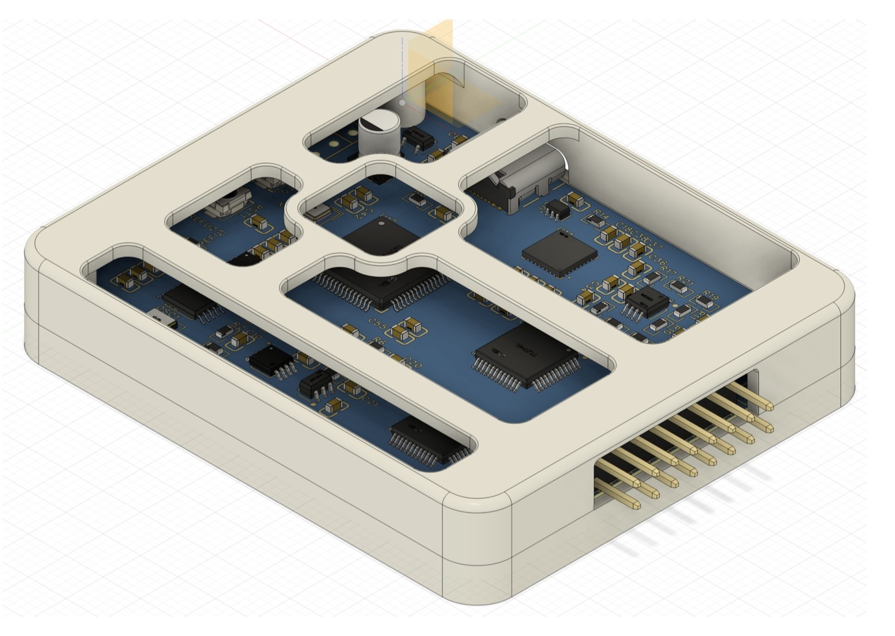

Hardware
硬件特性
围绕 16 通道阻抗数据采集板展开设计，重点关注微小恒流激励、模拟前端、通道复用与可复现实验接口。
高精度微小恒流源，用于稳定注入安全、可控的激励电流。
多通道电极切换与采集链路，用于构建基础 EIT 测量序列。
面向开源复现的板级设计，兼顾调试便利性、可制造性与后续扩展空间。
Progress
当前进度
PCB 验证已通过，项目进入功能完善、稳定性优化与实验流程整理阶段。
Showcase

Hardware
围绕 16 通道阻抗数据采集板展开设计，重点关注微小恒流激励、模拟前端、通道复用与可复现实验接口。
高精度微小恒流源，用于稳定注入安全、可控的激励电流。
多通道电极切换与采集链路，用于构建基础 EIT 测量序列。
面向开源复现的板级设计，兼顾调试便利性、可制造性与后续扩展空间。
Progress
PCB 验证已通过，项目进入功能完善、稳定性优化与实验流程整理阶段。
Showcase